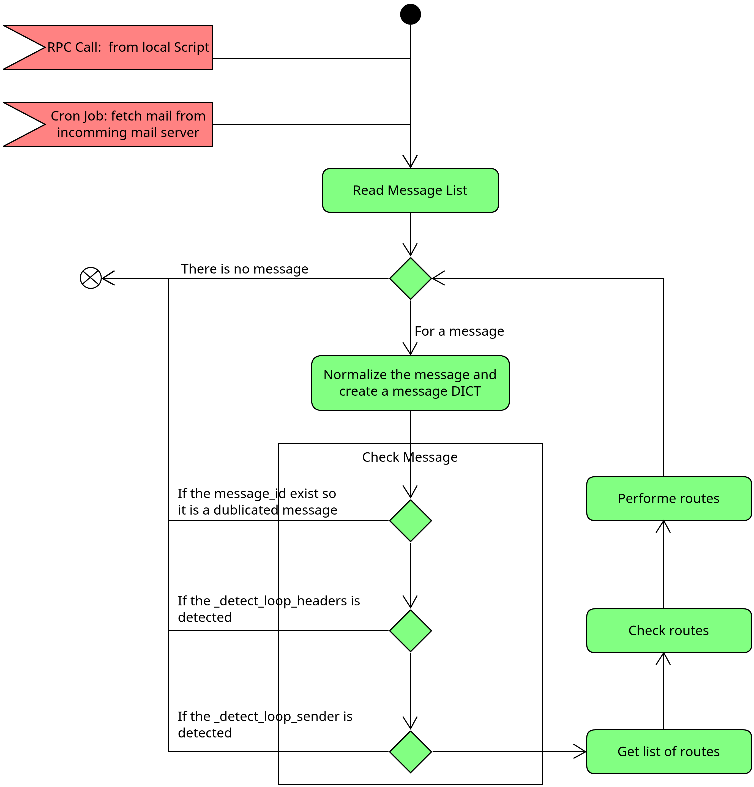

فرآیند پردازش ایمیلهای ورودی#
وقتی یک ایمیل به اودو میرسد، فقط یک متن ساده دریافت نمیشود. اودو باید تصمیم بگیرد این ایمیل دقیقاً چه معنایی دارد: آیا یک پیام جدید است؟ آیا پاسخ به یک گفتوگوی قبلی است؟ آیا باید باعث ایجاد رکوردی تازه شود؟ یا اصلاً یک پیام خطا و برگشتی است که نباید مانند یک ایمیل عادی با آن رفتار کرد؟
در این بخش میخواهیم مسیر کامل پردازش ایمیل ورودی را به زبان ساده و در عین حال حرفهای بررسی کنیم؛ از لحظهای که ایمیل خام از سرور دریافت میشود تا زمانی که یک رکورد در اودو ایجاد یا بهروزرسانی میشود و پیام در Chatter ثبت میگردد.
این مبحث برای افراد مبتدی مهم است، چون بسیاری از قابلیتهای پیشرفته اودو ــ مثل
Email Alias، پاسخگویی از طریق ایمیل، ثبت خودکار تیکتها، یا ساخت سرنخ از روی ایمیل ــ
بر پایه همین جریان پردازش ساخته شدهاند.
در پایان این بخش، یک دید روشن از موارد زیر خواهید داشت:
ایمیل از چه مسیرهایی وارد اودو میشود.
اودو چگونه ایمیل خام را به داده قابل پردازش تبدیل میکند.
چه کنترلهایی برای جلوگیری از تکرار، حلقه و خطا انجام میشود.
اودو چگونه تصمیم میگیرد پیام به کدام مدل یا رکورد مربوط است.
در نهایت، رکورد چگونه ساخته یا بهروزرسانی میشود.
چرا شناخت این جریان مهم است؟#
اگر فقط کاربر نهایی اودو باشید، شاید کافی باشد بدانید ایمیلها «کار میکنند». اما وقتی وارد توسعه ماژول، دیباگ رفتارهای ایمیل، طراحی aliasها یا تحلیل خطاهای mail gateway میشوید، دیگر این دید سطحی کافی نیست.
برای مثال، در این موقعیتها باید این جریان را بشناسید:
وقتی ایمیل به اودو میرسد اما رکوردی ایجاد نمیشود.
وقتی پاسخ مشتری به جای اتصال به گفتوگوی قبلی، یک رکورد جدید میسازد.
وقتی loop یا bounce باعث رفتار غیرمنتظره میشود.
وقتی میخواهید روی
message_newیاmessage_updateسفارشیسازی انجام دهید.
پس هدف این بخش فقط معرفی چند متد نیست؛ هدف این است که منطق ذهنی پشت پردازش ایمیل در اودو را درک کنید.
نمای کلی معماری دریافت ایمیل#
اودو به صورت پیشفرض از دو مسیر اصلی برای دریافت ایمیل استفاده میکند. ممکن است در یک پروژه واقعی فقط یکی از این مسیرها را ببینید، اما در نهایت هر دو به یک نقطه مشترک میرسند.
مسیر اول، Pull-based است؛ یعنی اودو خودش به سرور ایمیل متصل میشود و پیامها را
واکشی میکند. این روش معمولاً با IMAP یا POP و از طریق fetchmail انجام میشود.
مسیر دوم، Push-based است؛ یعنی یک سرویس خارجی یا Mail Transfer Agent مثل Postfix
ایمیل را به اسکریپت اودو تحویل میدهد. در این حالت، اودو منتظر دریافت مستقیم پیام از ورودی
استاندارد یا یک لایه واسط میماند.
با وجود تفاوت در نحوه ورود، مقصد نهایی هر دو مسیر یکسان است: متدی در مدل mail.thread که
پردازش اصلی را شروع میکند.
@api.model
def message_process(
self,
model,
message,
custom_values=None,
save_original=False,
strip_attachments=False,
thread_id=None,
):
...
این متد در فایل mail/models/mail_thread.py قرار دارد و میتوان آن را نقطه ورود منطقی
پردازش ایمیل در اودو دانست.

دو مسیر اصلی ورود ایمیل#
۱) دریافت از طریق Fetchmail#
در این روش، اودو به صندوق ایمیل متصل میشود و پیامها را از سرور میخواند. این منطق در
فایل models/fetchmail.py پیادهسازی شده و معمولاً با یک Scheduled Action اجرا میشود.
متدهای مهم این مسیر:
fetchmail.server._fetch_mails()fetchmail.server.fetch_mail()
در عمل، رفتار کلی چنین است:
در
IMAPمعمولاً ایمیلهای خواندهنشده جستوجو میشوند.بدنه کامل ایمیل با قالب
RFC822واکشی میشود.در
POPپیام دریافت میشود و اگر پردازش موفق باشد، از سرور حذف میگردد.برای هر ایمیل، در نهایت
message_process()فراخوانی میشود.
دو مقدار context که در این مسیر زیاد دیده میشوند:
fetchmail_cron_running=Truedefault_fetchmail_server_id=<server.id>
توجه
در پردازش ایمیلهای ورودی معمولاً هر پیام به صورت مستقل مدیریت میشود. دلیل این کار ساده است: اگر یکی از ایمیلها خطا داشته باشد، نباید پردازش بقیه ایمیلها از بین برود. به همین خاطر در بسیاری از جریانهای fetchmail، پس از پردازش هر ایمیل، تغییرات همان پیام به صورت جداگانه commit میشود.
۲) دریافت از طریق mailgate یا MTA Pipe#
در این روش، یک سرویس خارجی مثل Postfix یا هر Mail Transfer Agent دیگر، پیام را به اسکریپت
اودو تحویل میدهد. این اسکریپت در فایل static/scripts/odoo-mailgate.py قرار دارد.
جریان کلی این روش:
ایمیل خام از
stdinخوانده میشود.با استفاده از
XML-RPCبه اودو ارسال میگردد.روی مدل
mail.threadمتدmessage_processاجرا میشود.
مزیت این مسیر این است که لازم نیست اودو خودش صندوق ایمیل را به صورت دورهای واکشی کند؛ بلکه پیامها به محض رسیدن، به سمت اودو هدایت میشوند.
تصویر سادهشده از کل جریان#
اگر بخواهیم کل فرآیند را خیلی ساده بیان کنیم، مسیر پردازش ایمیل در اودو معمولاً از این مراحل عبور میکند:
دریافت ایمیل خام از یک منبع بیرونی
تبدیل ایمیل خام به یک ساختار استاندارد داخلی
کنترل اولیه برای جلوگیری از تکرار، loop و پیامهای نامعتبر
پیدا کردن مقصد مناسب پیام
بررسی امنیت و اعتبار مسیر انتخابشده
ایجاد یا بهروزرسانی رکورد و ثبت پیام در Chatter
در ادامه، هر کدام از این مراحل را جداگانه بررسی میکنیم.
فاز اول: دریافت پیام خام#
در این فاز، اودو هنوز معنای تجاری ایمیل را نمیفهمد. فقط یک پیام خام در اختیار دارد که باید برای تحلیل آماده شود.
در این لحظه معمولاً داده به یکی از این شکلها وارد میشود:
بایتهای خام ایمیل از سرور
IMAPیاPOPمتن کامل یک ایمیل استاندارد
RFC822دادهای که از طریق اسکریپت mailgate به اودو رسیده است
این مرحله بیشتر جنبه «انتقال» دارد تا «تحلیل». اما از نظر عملیاتی بسیار مهم است، چون اگر در همین بخش اتصال سرور، احراز هویت یا خواندن پیام با خطا مواجه شود، هیچکدام از مراحل بعدی اجرا نخواهند شد.
برای یک مبتدی، خوب است این تفاوت را به خاطر بسپارد:
دریافت ایمیل یعنی اودو پیام را از بیرون بگیرد.
پردازش ایمیل یعنی اودو تصمیم بگیرد با آن پیام چه کار کند.
فاز دوم: نرمالسازی پیام و ساخت message_dict#
بعد از دریافت پیام خام، اودو باید آن را به یک ساختار دادهای استاندارد تبدیل کند؛ ساختاری که همه بخشهای بعدی بتوانند با آن کار کنند. این کار معمولاً با متد زیر انجام میشود:
mail.thread.message_parse(message, save_original=False)
خروجی این متد معمولاً یک دیکشنری است که میتوان آن را قلب جریان پردازش ایمیل دانست.
چرا این مرحله مهم است؟ چون ایمیل خام، ترکیبی از headerها، body، attachmentها، metadata و اطلاعات فنی دیگر است. اگر این دادهها یکدست نشوند، تصمیمگیری در مراحل بعدی بسیار سخت خواهد شد.
مهمترین دادههایی که در این مرحله استخراج میشوند:
message_idبرای شناسایی یکتای پیامsubjectemail_fromیا فرستنده اصلیtoوccrecipientsبه عنوان فهرست گیرندگان واقعیreferencesوin_reply_toبرای تشخیص replydatebodyattachmentspartner_idsدر صورت امکان، بر اساس آدرسهای ایمیل شناختهشدهدادههای مربوط به bounce در صورت تشخیص
استخراج متن و فایلهای ضمیمه#
درون این مرحله، متدهایی مثل _message_parse_extract_payload نقش مهمی دارند. این متدها
به اودو کمک میکنند بدنه ایمیل را از attachmentها و سایر بخشهای multipart جدا کند.
رفتار معمول اودو در این بخش:
اگر پیام
text/plainباشد، برای نمایش مناسب معمولاً به HTML تبدیل میشود.اگر پیام
text/htmlباشد، یک sanitize اولیه روی آن انجام میشود.اگر ایمیل multipart باشد، بخشهای inline و attachment از هم تفکیک میشوند.
اگر
save_original=Trueباشد، نسخه اصلی ایمیل هم میتواند به صورت فایلoriginal_email.emlذخیره شود.
این یعنی وقتی شما در Chatter یک ایمیل دریافتی را میبینید، آن چیزی که نمایش داده میشود نتیجه یک مرحله تبدیل و پاکسازی است، نه لزوماً متن خام اولیه.
تشخیص پیامهای Bounce#
همه ایمیلهای ورودی، ایمیلهای واقعی کاربران نیستند. بعضی از آنها پیامهای بازگشتی سرور ایمیل هستند؛ مثل وقتی که یک ایمیل به مقصد نمیرسد و سرور، گزارش خطا برمیگرداند.
اودو تلاش میکند این نوع ایمیلها را از همان ابتدا تشخیص دهد. برای این کار، متدهایی مانند
_message_parse_extract_bounce و _detect_is_bounce استفاده میشوند.
نشانههای رایج برای تشخیص bounce:
فرستندههایی مثل
mailer-daemoncontent-type هایی مثل
multipart/reportیاdelivery-statusمقصدی که به bounce alias مربوط باشد
اگر پیام bounce تشخیص داده شود، اودو به آن مثل یک پیام عادی رفتار نمیکند. این موضوع در فاز routing اهمیت زیادی پیدا میکند.
فاز سوم: کنترلهای اولیه قبل از مسیریابی#
بعد از اینکه دادههای ایمیل به ساختار استاندارد تبدیل شد، اودو هنوز مستقیم سراغ ساخت رکورد نمیرود. اول چند کنترل مهم انجام میدهد تا مطمئن شود ادامه پردازش، منطقی و امن است.
۱) جلوگیری از پردازش تکراری#
معمولاً کلید اصلی برای تشخیص تکراری بودن پیام، Message-Id است. اگر اودو قبلاً پیامی با
همان message_id را پردازش کرده باشد، احتمال زیادی وجود دارد که این پیام تکراری باشد.
اهمیت این موضوع در سیستمهای ایمیلی بسیار زیاد است، چون تکرار در دریافت ایمیل اتفاقی رایج است؛ بهخصوص وقتی timeout، retry یا اختلالهای شبکه وجود داشته باشد.
۲) جلوگیری از Loop در سطح Header#
گاهی پیامها بین چند سیستم رفتوبرگشت میکنند و یک حلقه ناخواسته میسازند. برای مثال:
اودو ایمیلی میفرستد.
یک سرور واسط پاسخی خودکار برمیگرداند.
آن پاسخ دوباره وارد اودو میشود.
اودو آن را مثل یک رویداد جدید پردازش میکند.
اگر جلوی این وضعیت گرفته نشود، یک چرخه بیپایان شکل میگیرد. متدهایی مثل
_detect_loop_headers برای تشخیص این الگوها استفاده میشوند.
۳) جلوگیری از Loop در سطح نرخ ارسال#
بعضی loopها فقط از روی header قابل تشخیص نیستند. برای همین اودو رفتار فرستنده را هم در یک
بازه زمانی بررسی میکند. متدی مثل _detect_loop_sender تعداد پیامهای نزدیک به هم از یک
فرستنده را تحلیل میکند.
چند پارامتر مهم در این بخش:
mail.gateway.loop.minutesmail.gateway.loop.thresholdmail.gateway.allowed
به زبان ساده، اگر از یک فرستنده در مدت کوتاه تعداد زیادی پیام غیرعادی برسد، اودو ممکن است آن را نشانه loop یا misuse در نظر بگیرد.
فاز چهارم: مسیریابی پیام#
تا اینجا اودو میداند با یک ایمیل سالم یا ناسالم مواجه است، اما هنوز نمیداند این پیام باید به کجا برود. مرحله routing دقیقاً برای پاسخ دادن به همین سؤال است.
متد کلیدی این بخش:
mail.thread.message_route(message, message_dict, model=None, thread_id=None, custom_values=None)
خروجی این متد معمولاً فهرستی از routeها است. هر route به اودو میگوید این ایمیل باید روی کدام مدل یا رکورد اعمال شود و با چه کاربری پردازش گردد.
فرم مفهومی هر route به این صورت است:
(model, thread_id, custom_values, user_id, alias_record)
اودو در این مرحله چه تصمیمی میگیرد؟#
به صورت ساده، اودو یکی از این چند سناریو را دنبال میکند:
پیام، یک
bounceاست.پیام، پاسخ به یک گفتوگوی موجود است.
پیام، به یک
Email Aliasتعلق دارد.پیام، با یک مدل fallback پردازش میشود.
پیام، مستقیماً به catchall رسیده و عملاً قابل مسیریابی نیست.
سناریوی اول: پیام Bounce است#
اگر اودو تشخیص دهد که پیام یک bounce است، معمولاً از مسیرهای عادی عبور نمیکند. در این حالت تمرکز سیستم روی ثبت بازخورد مربوط به ارسال ناموفق است، نه ایجاد یک رکورد تجاری جدید.
در اینجا متدهایی مثل _routing_handle_bounce وارد عمل میشوند.
سناریوی دوم: پیام پاسخ به یک Thread موجود است#
این یکی از رایجترین حالتهاست. فرض کنید از داخل Chatter برای مشتری ایمیلی فرستادهاید و مشتری مستقیماً به همان ایمیل پاسخ داده است. اودو باید بفهمد این پیام جدید نیست، بلکه ادامه همان گفتوگوی قبلی است.
برای این تشخیص، دادههایی مثل References و In-Reply-To بررسی میشوند. اگر اودو بتواند
بین ایمیل ورودی و یک mail.message قبلی ارتباط برقرار کند، route به همان مدل و همان رکورد
هدایت میشود.
به زبان ساده:
اگر پیام reply باشد، معمولاً رکورد جدید ساخته نمیشود.
پیام جدید به تاریخچه همان رکورد اضافه میگردد.
سناریوی سوم: پیام به یک Alias مربوط است#
اگر ایمیل reply به یک thread موجود نباشد، اودو بررسی میکند آیا گیرنده ایمیل با یکی از aliasهای تعریفشده در سیستم تطبیق دارد یا نه.
برای مثال، فرض کنید این آدرس را در اودو تعریف کردهاید:
sale@odoonix.ir
اگر یک ایمیل تازه به این آدرس برسد، اودو بررسی میکند که این alias به کدام مدل مرتبط است. مثلاً ممکن است این alias برای ساخت سرنخ در CRM یا ایجاد درخواست در Helpdesk تعریف شده باشد.
در این بخش معمولاً مواردی مثل این بررسی میشوند:
گیرندگان واقعی پیام
نام کامل alias
local-part ایمیل در بعضی تنظیمات
کاربری که باید پردازش را انجام دهد
اعتبار route نهایی
پس alias در عمل یک «قانون تبدیل ایمیل به رکورد» است.
سناریوی چهارم: استفاده از Fallback Model#
گاهی پیام نه bounce است، نه reply، و نه با alias مشخصی تطبیق دارد. در این شرایط، اگر برای پردازش یک مدل fallback تعریف شده باشد، اودو میتواند پیام را به آن مدل هدایت کند.
این حالت بیشتر در سناریوهای سفارشی یا gatewayهای کنترلشده کاربرد دارد.
سناریوی پنجم: Catchall یا پیام غیرقابل مسیریابی#
اگر ایمیل مستقیماً به catchall برسد، معمولاً به این معناست که مقصد اصلی آن مشخص نبوده یا سرور ایمیل آن را به عنوان پیام بدون مقصد معتبر هدایت کرده است. در چنین شرایطی، پیام اغلب به عنوان bounce یا پیام غیرقابل مسیریابی بررسی میشود، نه به عنوان یک ایمیل عادی برای ایجاد رکورد جدید.
سناریوی ششم: هیچ route معتبری پیدا نشود#
اگر هیچکدام از شرایط بالا برقرار نباشد، اودو در نهایت به این نتیجه میرسد که برای این پیام، مسیر معتبری وجود ندارد. در این حالت، پردازش با خطا یا توقف کنترلشده روبهرو میشود.
فاز پنجم: اعتبارسنجی مسیر و کنترل امنیت#
پیدا کردن route به تنهایی کافی نیست. اودو هنوز باید مطمئن شود این route از نظر فنی و امنیتی
معتبر است. این مرحله معمولاً با متدی مانند _routing_check_route انجام میشود.
در این بخش، چند سؤال مهم بررسی میشود:
آیا مدل مقصد واقعاً وجود دارد؟
اگر
thread_idوجود دارد، آیا رکورد مقصد هنوز موجود است؟آیا مدل مقصد از پردازش ایمیل پشتیبانی میکند؟
آیا فرستنده اجازه ایجاد یا بهروزرسانی چنین رکوردی را دارد؟
در اینجا دو متد بسیار مهم هستند:
message_newبرای زمانی که باید رکورد جدید ساخته شودmessage_updateبرای زمانی که باید رکورد موجود بهروزرسانی شود
اگر مدلی این رفتارها را نداشته باشد، route هرچند ظاهراً پیدا شده، در عمل قابل استفاده نخواهد بود.
امنیت Alias چگونه کنترل میشود؟#
Aliasها میتوانند سیاستهای امنیتی متفاوتی داشته باشند. بسته به تنظیمات، ممکن است فقط این گروهها اجازه استفاده از یک alias را داشته باشند:
everyone: همه فرستندگان
partners: فقط مخاطبان ثبتشده در اودو
followers: فقط دنبالکنندگان رکورد مرتبط
اگر فرستنده با سیاست امنیتی alias سازگار نباشد، route رد میشود. در بعضی موارد، اودو حتی میتواند ایمیل bounce مناسب برگرداند تا به فرستنده اطلاع دهد پیام او پذیرفته نشده است.
فاز ششم: اجرای route و ثبت پیام#
اگر همه مراحل قبلی با موفقیت عبور کنند، حالا وقت اجرای route است. این بخش معمولاً در
متدهایی مثل _message_route_process انجام میشود.
در این مرحله، اودو با توجه به نوع route یکی از این دو کار اصلی را انجام میدهد:
یک رکورد موجود را بهروزرسانی میکند.
یک رکورد جدید میسازد.
منطق کلی اجرا به این صورت است:
کاربر اجرایی route تعیین میشود.
اگر
thread_idوجود داشته باشد،message_updateروی رکورد اجرا میشود.اگر رکوردی وجود نداشته باشد،
message_newبرای ساخت رکورد تازه فراخوانی میشود.پس از آن، پیام نهایی در Chatter یا سیستم اعلان ثبت میشود.
در مدلهای مختلف، ثبت پیام معمولاً با یکی از این دو مسیر انجام میشود:
message_postmessage_notify
اینجاست که کاربر برای اولین بار نتیجه پردازش را در رابط اودو میبیند.
رفتار پیشفرض message_new و message_update#
برای یک توسعهدهنده، دانستن رفتار پیشفرض این دو متد بسیار مهم است؛ چون بسیاری از ماژولهای کسبوکاری دقیقاً همینجا سفارشیسازی میکنند.
رفتار معمول message_new در mail.thread:
یک رکورد جدید ایجاد میکند.
اگر مدل فیلد نام داشته باشد، معمولاً
subjectرا به عنوان مقدار اولیه استفاده میکند.در صورت امکان، ایمیل اصلی را در یکی از فیلدهای مناسب قرار میدهد.
رفتار معمول message_update:
اگر لازم باشد روی رکورد موجود
writeانجام میدهد.در سادهترین حالت، فقط پیام جدید را به thread موجود اضافه میکند.
در ماژولهای واقعی مثل CRM، Helpdesk یا Recruitment، معمولاً این دو متد override میشوند تا رفتار دقیقتر و تجاریتری پیاده شود.
یک مثال ذهنی ساده#
فرض کنید در شرکت شما alias زیر تعریف شده است:
jobs@mycompany.com
این alias به مدل hr.applicant متصل است. حالا یک متقاضی رزومه خود را به این آدرس ارسال
میکند. اودو تقریباً چنین مسیری را طی میکند:
ایمیل از سرور دریافت میشود.
message_parseاطلاعاتی مثل subject، from، body و attachment را استخراج میکند.بررسی میشود که ایمیل تکراری یا loop نباشد.
سیستم متوجه میشود گیرنده با alias
jobsتطبیق دارد.route اعتبارسنجی میشود.
متد
message_newروی مدلhr.applicantاجرا میشود.یک رکورد متقاضی جدید ساخته میشود.
پیام اصلی و رزومه در Chatter یا attachmentهای رکورد ثبت میشوند.
این مثال، منطق کلی mail gateway را بسیار ملموستر میکند.
اگر بخواهید این جریان را دیباگ کنید#
وقتی در پروژه واقعی مشکلی در پردازش ایمیل میبینید، بهتر است تحلیل را از این نقاط شروع کنید:
آیا ایمیل اصلاً به اودو رسیده است؟
آیا
message_processفراخوانی شده است؟آیا
message_parseدادههای لازم را درست استخراج کرده است؟آیا پیام به عنوان duplicate یا loop رد شده است؟
آیا route مناسب پیدا شده است؟
آیا
_routing_check_routeآن route را معتبر دانسته است؟آیا
message_newیاmessage_updateدر مدل مقصد override شدهاند؟
متدهایی که معمولاً در دیباگ بیشترین ارزش را دارند:
message_processmessage_parsemessage_route_routing_check_route_message_route_processmessage_newmessage_update
اگر این نقاط را بشناسید، تحلیل بسیاری از خطاهای ایمیل در اودو بسیار سریعتر میشود.
نکات مهم برای توسعهدهندگان#
اگر قرار است ماژولی بنویسید که از ایمیلهای ورودی استفاده میکند، این نکات را در نظر بگیرید:
از override کردن بیدلیل متدهای مرکزی
mail.threadپرهیز کنید.تا حد امکان رفتار سفارشی را در
message_newوmessage_updateمدل مقصد پیاده کنید.سناریوهای reply و new message را جداگانه تست کنید.
همیشه روی attachmentها، body HTML و فرستندههای ناشناس حساس باشید.
برای aliasها سیاست امنیتی روشن تعریف کنید.
وضعیت bounce و loop را در سناریوهای تولیدی جدی بگیرید.
جمعبندی#
پردازش ایمیل ورودی در اودو یک pipeline چندمرحلهای و حسابشده است. این pipeline از دریافت ایمیل خام شروع میشود، سپس پیام را به یک ساختار استاندارد تبدیل میکند، کنترلهای اولیه را انجام میدهد، مقصد مناسب را پیدا میکند، اعتبار و امنیت مسیر را میسنجد و در نهایت رکوردی را ایجاد یا بهروزرسانی میکند.
اگر بخواهیم کل منطق را در یک جمله خلاصه کنیم، میتوان گفت:
اودو هر ایمیل ورودی را اول میفهمد، بعد تصمیم میگیرد، و تازه در مرحله آخر آن را به عمل تبدیل میکند.
همین طراحی چندمرحلهای است که باعث میشود mail gateway اودو هم توسعهپذیر باشد، هم در برابر خطاهای رایج مقاوم بماند، و هم بتواند در ماژولهای مختلف کسبوکاری رفتارهای متفاوتی ارائه دهد.